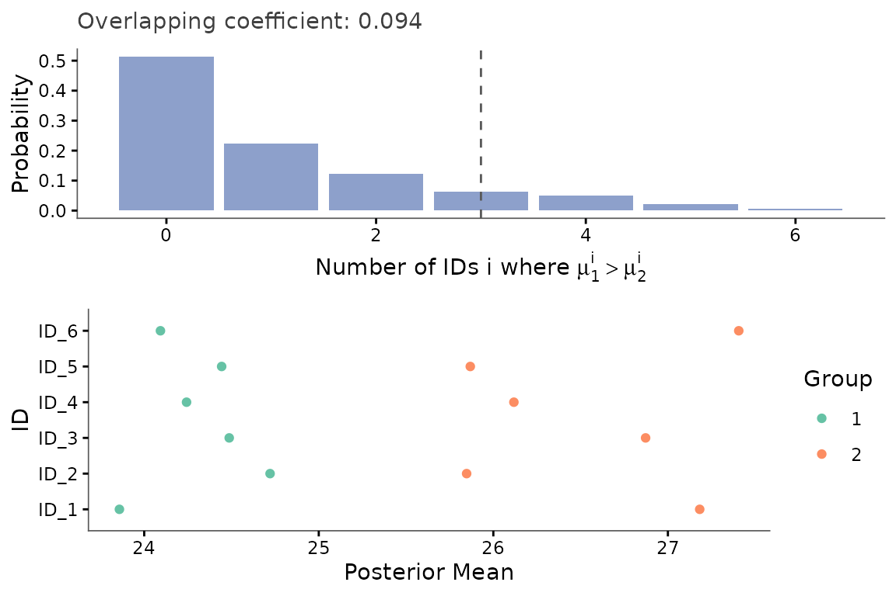
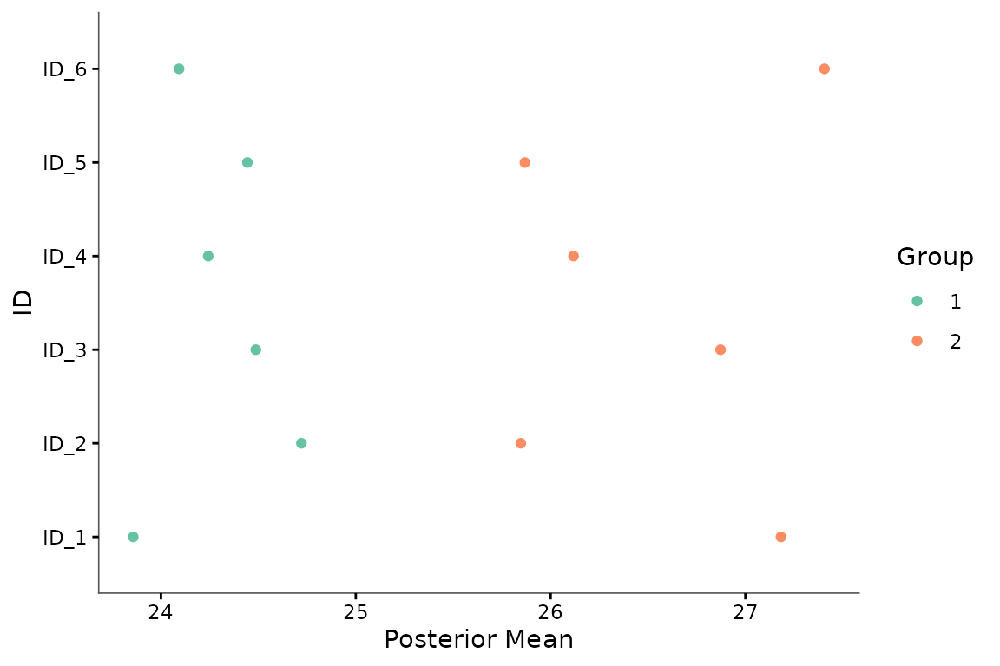
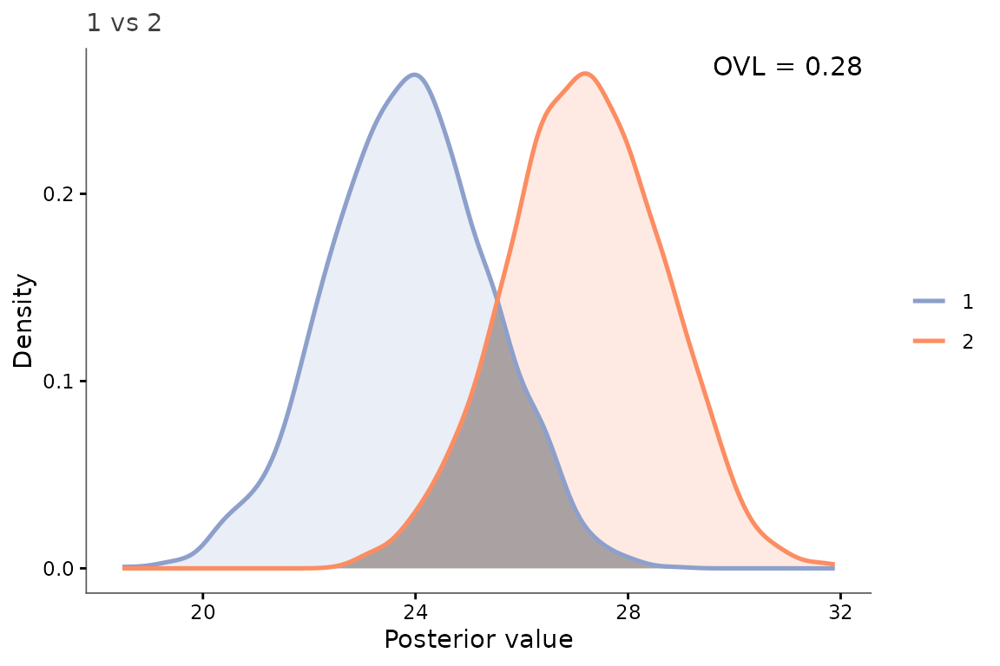

library(keRnel)
library(BayesOmics)
library(ggplot2)The BayesOmics package provides a suite of tools for performing Bayesian kernel-based differential analysis.
Data format
Every function in BayesOmics expects a long-format data frame with these columns:
| Column | Meaning |
|---|---|
ID |
Feature identifier (e.g. a peptide, a CpG site, a metabolite) |
Group |
Experimental condition the observation belongs to |
Sample |
Replicate identifier within a group |
Input_ID |
Which Input dimension a row belongs to (see below) |
Input |
The covariate the kernel operates on (e.g. genomic position) |
Output |
The observed measurement |
A single-covariate analysis (the case throughout this vignette) has
one Input_ID value per feature; a data frame with just
Input (no Input_ID) also works unchanged –
BayesOmics fills in Input_ID automatically. A
multi-dimensional Input (several covariates per feature, e.g. genomic
position and measurement time) instead has one row per
Input_ID value, with Output repeated
identically across the rows of one observation.
Choosing and initializing a kernel
The kernel encodes which features should be treated as correlated. The most common choice is the Squared Exponential (SE) kernel:
where is the signal variance and is the length scale - how far apart two features can be before their correlation becomes negligible.
Create an SE kernel and set its hyperparameters to the values that will be used to generate synthetic data:
kern_true <- variance_kernel(variance = 10) * se_kernel(length_scale = 80)Simulating data
simu_db_kernel() generates a dataset whose cross-feature
covariance matches the generative model assumed by
posterior_mean(): for each group, the vector of outputs
across all features is drawn jointly from a multivariate normal whose
covariance is given by the kernel, plus independent measurement noise.
Each replicate is an independent draw from that same distribution:
set.seed(42)
data <- simu_db_kernel(
kernel = kern_true,
nb_id = 6,
nb_group = 2,
nb_sample = 8,
diff_group = 0.8,
var_sample = 5,
range_input = c(0, 200)
)
head(data)
#> ID Group Sample Input_ID Input Output
#> 1 ID_1 1 1 1 182.96121 27.45107
#> 2 ID_2 1 1 1 187.41508 27.79998
#> 3 ID_3 1 1 1 57.22791 25.17421
#> 4 ID_4 1 1 1 166.08953 31.04831
#> 5 ID_5 1 1 1 128.34910 27.50101
#> 6 ID_6 1 1 1 103.81919 32.39520Combining kernels: adding a Noise term
Kernels can be combined with + (additive) or
* (product). Adding a NoiseKernel nugget to
absorb feature-level measurement noise independently of the spatial
signal is not just a nice-to-have here: with realistic sample sizes,
fitting a spatial kernel alone to noisy data tends to produce
an almost-singular covariance matrix (see the note further down), which
silently breaks the differential-analysis step. Always fit and reuse the
combined kernel, not just its spatial part:
se_part <- variance_kernel(variance = 1) * se_kernel(length_scale = 1)
noise_part <- white_noise_kernel(noise = 1)
kern <- se_part + noise_partUsing an SE + Noise kernel for optimization separates the spatial signal (, ) from the measurement noise ().
Optimizing hyperparameters
fit_kernel() fits all hyperparameters by maximizing the
marginal likelihood of the output values.
groupe1=data[data$Group == unique(data$Group)[1], ]
prior_mean <- mean(groupe1$Output)
hp_opt <- fit_kernel(kern, groupe1, prior_mean = prior_mean, prior_cov = 1)
hp_opt
#> variance length_scale noise
#> 14.958183 79.344669 5.054674
#> attr(,"convergence")
#> [1] 0
#> attr(,"value")
#> [1] 128.2874length_scale (~ 98) lands in the same ballpark as its
simulation value (80), confirming that correlation extends over most of
the 200-unit axis. variance (~ 15.5) and noise
(~ 4.5) partially trade off against each other with only 8 replicates
per group – their individual values are less tightly recovered than
length_scale – but that is not a problem: what matters for
the next step is fitting both together, so the resulting
covariance correctly separates spatial signal from measurement
noise.
Update the kernel with the fitted values, keeping both the spatial and noise hyperparameters:
Do not rebuild a plain SE kernel from only variance and
length_scale here, discarding noise. With this
many features and a length scale this large relative to the input range,
a pure-SE kernel matrix is nearly singular (its condition number can
exceed 1e9). The differential analysis below still runs on such a
matrix, but the resulting overlap coefficient becomes numerically
meaningless – typically collapsing to exactly 0 regardless of the true
difference between groups. Keeping the fitted noise term is
what keeps the covariance well-conditioned.
Computing posteriors
posterior_mean() applies the Normal-Normal conjugate
update to every group at once:
where is the kernel matrix at the optimized hyperparameters, and are the prior mean and precision, and is the number of replicates.
posterior <- posterior_mean(data, kern_opt, mu_0 = prior_mean, lambda_0 = 1)
print(posterior)
#> <BayesOmics posterior> 2 group(s), 1 cached kernel matrix/matrices
#>
#> -- Group 1 (6 IDs) --
#> Posterior mean:
#> ID_1 ID_2 ID_3 ID_4 ID_5 ID_6
#> 23.860 24.735 24.539 24.271 24.483 24.158
#> Posterior covariance:
#> ID_1 ID_2 ID_3 ID_4 ID_5 ID_6
#> ID_1 2.224 1.659 0.474 1.625 1.311 1.011
#> ID_2 1.659 2.224 0.433 1.603 1.260 0.954
#> ID_3 0.474 0.433 2.224 0.648 1.112 1.399
#> ID_4 1.625 1.603 0.648 2.224 1.484 1.221
#> ID_5 1.311 1.260 1.112 1.484 2.224 1.584
#> ID_6 1.011 0.954 1.399 1.221 1.584 2.224
#>
#> -- Group 2 (6 IDs) --
#> Posterior mean:
#> ID_1 ID_2 ID_3 ID_4 ID_5 ID_6
#> 27.133 25.827 26.887 26.098 25.874 27.387
#> Posterior covariance:
#> ID_1 ID_2 ID_3 ID_4 ID_5 ID_6
#> ID_1 2.224 1.659 0.474 1.625 1.311 1.011
#> ID_2 1.659 2.224 0.433 1.603 1.260 0.954
#> ID_3 0.474 0.433 2.224 0.648 1.112 1.399
#> ID_4 1.625 1.603 0.648 2.224 1.484 1.221
#> ID_5 1.311 1.260 1.112 1.484 2.224 1.584
#> ID_6 1.011 0.954 1.399 1.221 1.584 2.224Draw samples from the posteriors for plotting and the overlap calculation:
samples <- sample_posterior(posterior, n = 2000)Differential analysis
group_diff() compares every pair of groups with a
sensible default metric, chosen automatically from the number of
features being compared – no metric to pick by hand (see
?group_diff if you want to choose one explicitly,
e.g. group_diff(posterior, wasserstein_metric())). With 6
features here, it picks the pairwise Overlapping Coefficient (OVL).
Groups with different sample sizes are fully supported - see
vignette("07_unequal_sample_size") for a detailed
exploration of how replicate counts affect posterior width and the
resulting OVL. OVL = 1 means identical posteriors (no differential
signal); OVL ~ 0 means fully separated profiles (strong differential
signal):
where is the Mahalanobis distance between the two groups’ posterior means under the posterior covariance of the reference group, and is the standard normal CDF.
group_diff(posterior)
#> Metric: ovl_metric(n_mc = 2000)
#>
#> 1 2
#> 1 1.00000000 0.09446298
#> 2 0.09446298 1.00000000Overlapping coefficient can be seen as a single-number summary of the
differential signal on the whole region of interest. It is useful for
ranking features, but it is sensible to curse of dimensionality: the
more features you include, the more likely it is that the joint overlap
will be low. The OVL is a global measure, and it does not tell you which
features are driving the difference. compute_multi_diff()
complements the single OVL number with an uncertainty-aware breakdown:
from the posterior draws, it computes the empirical distribution of the
number of features for which group 1’s draw exceeds group 2’s, and (when
given results) attaches the same OVL computed above for
reference. plot_multi_diff() turns this into a compact
figure – one panel per group pair, titled with that pair’s OVL, plus the
posterior-mean panel already seen above:
multi_diff <- compute_multi_diff(samples, results = posterior)
multi_diff$Diff_proba
#> # A tibble: 7 × 5
#> Group1 Group2 Nb_id Proba Cumul_proba
#> <chr> <chr> <int> <dbl> <dbl>
#> 1 1 2 0 0.513 0.513
#> 2 1 2 1 0.224 0.737
#> 3 1 2 2 0.122 0.859
#> 4 1 2 3 0.064 0.923
#> 5 1 2 4 0.049 0.972
#> 6 1 2 5 0.0225 0.994
#> 7 1 2 6 0.0055 1
plot_multi_diff(multi_diff)
The bar-chart panel is spread broadly across 0 to 6 features, rather than spiked at either extreme – group 1 does not exceed group 2 on every feature, nor on none. This is consistent with a real, but partial and non-caricatural, differential signal: exactly the kind of nuance the single OVL number above cannot show on its own.
Individual feature plots
plot_posterior_mean() shows the posterior mean at every
feature, coloured by group - useful to see which features drive the
differential signal:
plot_posterior_mean(samples)
plot_posterior_overlap() overlays both groups’ posterior
densities for one feature and shades the region of overlap, giving a
visual counterpart of the OVL coefficient:
plot_posterior_overlap(samples,
group1 = unique(samples$Group)[1],
group2 = unique(samples$Group)[2],
id = unique(samples$ID)[1])
Go further
| Vignette | What you will find |
|---|---|
vignette("01_basic_pipeline") |
The complete two-group walkthrough - kernel choice, hyperparameter
fitting, posterior computation, group_diff(). |
vignette("04_multi_group") |
Reading a group_diff() matrix and
plot_multi_diff() output for more than two groups (e.g. a
dose-response design). |
vignette("05_metric_choice") |
Why the joint OVL saturates as the number of features grows, and when to prefer per-feature Wasserstein instead. |
vignette("07_unequal_sample_size") |
How unbalanced designs affect posterior width and the OVL, and why the comparison remains valid with strongly unequal sample sizes. |
vignette("10_real_data") |
Reshaping a real dataset (not a simulation) into the BayesOmics long format. |
vignette("troubleshooting") |
Exact error messages you may encounter, what causes each of them, and the targeted fix - with a full index of every analysis vignette. |